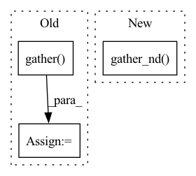

Pattern ID :36246

Before Change
is_anchor_iou_match_any_idx = tf.where(is_anchor_iou_match_any)[:, 0]
// TODO: is_anchor_iou_match_any_idx.shape[0] == 0
anchor_best_matching_bbox = tf.argmax(tf.gather(bbox_matched_k_anchors, is_anchor_iou_match_any_idx, axis=-1), 0)
anchor_labels = tf.gather(labels_true, anchor_best_matching_bbox) // [num_picked_anchors， num_classes]
pred_iou_loss = tf.reduce_sum(bbox_matched_k_anchors * ious, 0)[is_anchor_iou_match_any]
After Change
def __call__(self, bbox_labels_true, bbox_labels_pred):
// get_assignments https://github.com/Megvii-BaseDetection/YOLOX/tree/master/yolox/models/yolo_head.py/륁
bbox_labels_true = tf.gather_nd(bbox_labels_true, tf.where(bbox_labels_true[:, -1] > 0))
bboxes_true, labels_true = bbox_labels_true[:, :4], bbox_labels_true[:, 4:-1]
bboxes_true_nd = tf.expand_dims(bboxes_true, 1)
In pattern: SUPERPATTERN
Frequency: 3
Non-data size: 3
Instances
Fragment ID: 102675963
Project Name: leondgarse/keras_cv_attention_models
Commit Name: 676534a8f82e32f70be91bc53da791194671e8db
Time: 2022-03-12
Author: leondgarse@gmail.com
File Name: keras_cv_attention_models/coco/anchors_func.py
M Class Name: AnchorFreeAssignMatching
N Class Name: AnchorFreeAssignMatching
M Method Name: __call__(3)
N Method Name: __call__(3)
M Parent Class:
N Parent Class:
M File Name: keras_cv_attention_models/coco/anchors_func.py
N File Name: keras_cv_attention_models/coco/anchors_func.py
M Start Line: 292
M End Line: 340
N Start Line: 291
N End Line: 339
'>
Before Change
def assign_anchor_classes_by_iou_with_bboxes(bbox_labels, anchors, ignore_threshold=0.4, overlap_threshold=0.5):
num_anchors = anchors.shape[0]
valid_bboxes_pick = tf.where(bbox_labels[:, -1] > 0)[:, 0]
bbox_labels = tf.gather(bbox_labels, valid_bboxes_pick)
bboxes, labels = bbox_labels[:, :4], bbox_labels[:, 4]
anchor_ious = iou_nd(bboxes, anchors)
anchor_best_iou_ids = tf.argmax(anchor_ious, axis=0)
After Change
def assign_anchor_classes_by_iou_with_bboxes(bbox_labels, anchors, ignore_threshold=0.4, overlap_threshold=0.5):
num_anchors = anchors.shape[0]
bbox_labels = tf.gather_nd(bbox_labels, tf.where(bbox_labels[:, -1] > 0))
bboxes, labels = bbox_labels[:, :4], bbox_labels[:, 4]
anchor_ious = iou_nd(bboxes, anchors) // [num_bboxes, num_anchors]
anchor_best_iou_ids = tf.argmax(anchor_ious, axis=0) // [num_anchors]
'>
Fragment ID: 102675961
Project Name: leondgarse/keras_cv_attention_models
Commit Name: 676534a8f82e32f70be91bc53da791194671e8db
Time: 2022-03-12
Author: leondgarse@gmail.com
File Name: keras_cv_attention_models/coco/anchors_func.py
M Class Name: AnonimousClass
N Class Name: AnonimousClass
M Method Name: assign_anchor_classes_by_iou_with_bboxes(4)
N Method Name: assign_anchor_classes_by_iou_with_bboxes(4)
M Parent Class:
N Parent Class:
M File Name: keras_cv_attention_models/coco/anchors_func.py
N File Name: keras_cv_attention_models/coco/anchors_func.py
M Start Line: 103
M End Line: 104
N Start Line: 103
N End Line: 103
'>
Before Change
object_true_idx = object_true_idx_nd[:, 0]
object_true = tf.tensor_scatter_nd_update(tf.zeros_like(bbox_labels_pred[:, -1]), object_true_idx_nd, tf.ones_like(bboxes_true[:, -1]))
bbox_labels_pred_valid = tf.gather(bbox_labels_pred, object_true_idx)
bboxes_pred, labels_pred, object_pred = bbox_labels_pred_valid[:, :4], bbox_labels_pred_valid[:, 4:-1], bbox_labels_pred[:, -1]
anchors_centers = tf.gather(self.anchor_assign.anchors_centers, object_true_idx)
anchors_hws = tf.gather(self.anchor_assign.anchors_hws, object_true_idx)
After Change
// object_true_idx = object_true_idx_nd[:, 0]
// bbox_labels_pred_valid = tf.gather(bbox_labels_pred, object_true_idx)
bbox_labels_pred_valid = tf.gather_nd(bbox_labels_pred, object_true_idx_nd)
bboxes_pred, labels_pred, object_pred = bbox_labels_pred_valid[:, :4], bbox_labels_pred_valid[:, 4:-1], bbox_labels_pred[:, -1]
// anchors_centers = tf.gather(self.anchor_assign.anchors_centers, object_true_idx)
// anchors_hws = tf.gather(self.anchor_assign.anchors_hws, object_true_idx)
'>
Fragment ID: 102675956
Project Name: leondgarse/keras_cv_attention_models
Commit Name: 676534a8f82e32f70be91bc53da791194671e8db
Time: 2022-03-12
Author: leondgarse@gmail.com
File Name: keras_cv_attention_models/coco/losses.py
M Class Name: AnchorFreeLoss
N Class Name: AnchorFreeLoss
M Method Name: __valid_call_single__(3)
N Method Name: __valid_call_single__(3)
M Parent Class: tf.keras.losses.Loss
N Parent Class: tf.keras.losses.Loss
M File Name: keras_cv_attention_models/coco/losses.py
N File Name: keras_cv_attention_models/coco/losses.py
M Start Line: 177
M End Line: 185
N Start Line: 164
N End Line: 175